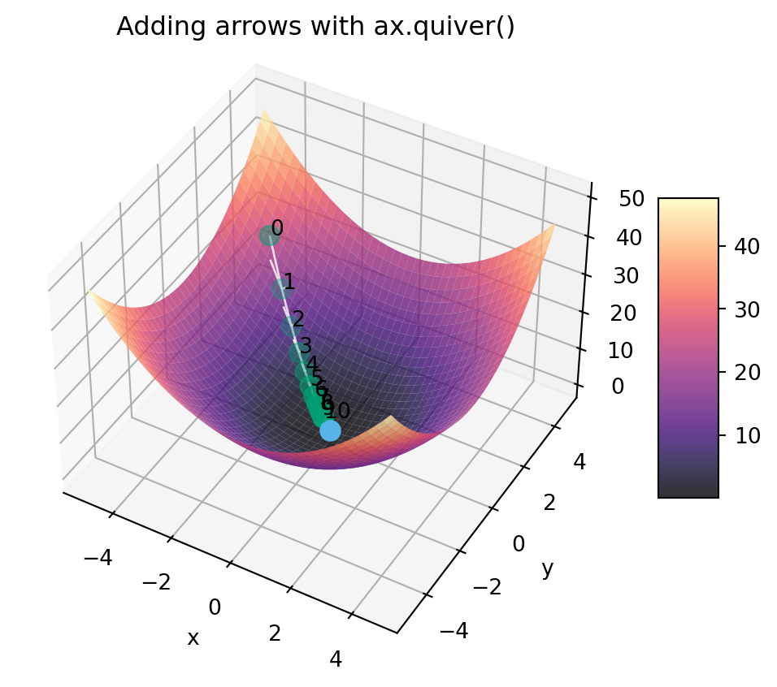

The main reason why I figured a writeup on plotting with Python could be helpful for DSAN 5300 specifically is because, even though many of yall are in DSAN 5200 right now, there are visualization techniques that will be helpful to have early-on in 5300—primarily the challenges of plotting in 3D rather than 2D—which may not be covered until later in 5200.
So, therefore, the motivating example in this writeup will be plotting a 3D surface within which we’ll want to overlay the path taken by gradient descent to move from a randomly-selected point on the surface to a (possibly local) minimum of the surface.
No 3D Plotting in Seaborn 😢 Matplotlib to the Rescue!
Sadly, even though Seaborn is typically my go-to for the types of visualizations I find myself needing to produce in Data Science contexts, it has little to no support for 3D plotting specifically. Which… makes some sense, given that (as you’ll see in 5200) in many visual-communication scenarios there is usually a way to use 2D plots to achieve a more easily-interpretable set of visualizations for your audience!
But, nonetheless, in this class we have run into one of the key cases (understanding gradient descent beyond single-variable loss functions) where I think we can truly benefit from having 3D plots. So, with that said, a link you can bookmark and explore to get a feel for 3D visualization in Python is Matplotlib’splot-type: 3D tag, which gathers together all of the examples within Matplotlib’s documentation which involve generating 3D plots:
To see your first 3D plot created with matplotlib, let’s consider how gradient descent might allow us to choose a random point on the (visible) surface of this plot (the green dot), and eventually make our way to the optimal loss-minimizing value (the light blue dot at \((x,y) = (0,0)\)):
Code
import matplotlib.pyplot as pltimport numpy as nprng = np.random.default_rng(seed=5302)from matplotlib import cmcb_palette = ['#E69F00', '#56B4E9', '#009E73']def loss_fn(x, y):return x**2+ y**2def objective_fn(x, y):return-loss_fn(x, y)rand_v = np.array([ rng.uniform(low=-4, high=0), rng.uniform(low=0, high=4),])def gen_surface_plot( points, title=None, minimization=True, label_points=False, arrows=False, elevation=42, azimuth=-60):if title isNone: title ="Minimization of a Loss Function"ifnot minimization: title ="Maximization of an Objective Function" opt_fn = loss_fn if minimization else objective_fn fig, ax = plt.subplots( subplot_kw={"projection": "3d","title": title,"computed_zorder": False, } )# Generate the surface representing the value of# the loss function (the z coordinate) for any# pair of (x,y) values x_range = np.arange(-5, 5, 0.25) y_range = np.arange(-5, 5, 0.25) x_vals, y_vals = np.meshgrid(x_range, y_range) z_vals = opt_fn(x_vals, y_vals)# Plot the points given by the points argument! points_x = [p[0] for p in points] points_y = [p[1] for p in points] points_z = [opt_fn(p[0],p[1]) for p in points] ax.scatter(points_x, points_y, points_z, color=cb_palette[2], s=80, zorder=10)# Add labels to points if label_points is Trueif label_points:for point_index, point inenumerate(points): ax.text(point[0], point[1], loss_fn(point[0], point[1]), str(point_index), zorder=20)# Compute and plot the optimal value opt_z = np.min(z_vals) if minimization else np.max(z_vals) ax.scatter([0], [0], [opt_z], color=cb_palette[1], s=80, zorder=10) surf = ax.plot_surface( x_vals, y_vals, z_vals, cmap='magma', zorder=0, alpha=0.8 ) ax.set_xlabel("x") ax.set_ylabel("y") ax.view_init(elev=elevation, azim=azimuth)# Add arrows if requestedif arrows:for i inrange(len(points) -1): cur_point = points[i] cur_z = loss_fn(cur_point[0], cur_point[1]) next_point = points[i+1] next_z = loss_fn(next_point[0], next_point[1]) x_diff = next_point[0] - cur_point[0] y_diff = next_point[1] - cur_point[1] z_diff = next_z - cur_z ax.quiver( cur_point[0], cur_point[1], cur_z, x_diff, y_diff, z_diff, color ='white', alpha =.8, lw =1, length=1 )# Add a color bar which maps values to colors. fig.colorbar(surf, shrink=0.5, aspect=5) plt.show()gen_surface_plot(points=[rand_v])
Also note how I made the plot-generation code into a function, here called gen_surface_plot(), which can be immensely helpful for your own plotting adventures, since you can utilize arguments to the functions to quickly change different aspects of the plot. For example, I set this function up to allow “instant” switching from visualization of minimization to visualization of a maximization problem, which means we can just pass minimization=False to the function to generate a plot of what finding the maximum value of a function (the same function, just “flipped over” via \(z \mapsto -z\)):
Returning to our minimization-in-3D case, how can we now plot the path/trajectory that we follow if we apply gradient descent starting from the randomly-chosen (green) point? One easy way is to just keep track of each new value in a list (here, we call it grad_path), and then plot each element in this list as a point along our gradient-descent pathway:
Even though it may be obvious in this case the order of the points (meaning, you can just “eyeball” which was the starting point, the second point, the third, and so on), oftentimes it can help to label the order of the points. So, the function takes an optional label_points argument, which shows the order of the points along the gradient path if set to True (for more on how the text() function works in 3D world, see here):
And now we can get a sense for how many steps we’ll need for convergence in this case (with a step size set to be \(0.1\)), by extending this plot to show the trajectory for 10 steps rather than 5:
I’m not gonna lie to you… by the time you are trying to add arrows to your matplotlib plots, you have somewhat hit the limits of the (very basic!) functionality of matplotlib. It is possible, and supported by way of the quiver() function, but personally I’ve never been able to get the arrows to actually look good, which is why at this point I might recommend switching over from matplotlib to something like Plotly for this task. But, since we’ve already produced the above plot, we may as well see what it looks like to just add the arrows onto the plot using ax.quiver().
Code
gen_surface_plot( grad_path_10, title="Adding arrows with ax.quiver()", label_points=True, arrows=True)

Moving the “Camera”
Lastly, finally, since this trajectory is somewhat difficult to see from the default angle, you can use the elevation and azimuth options to the ax.view_init() function to shift the “camera” around! Here we’ll try to see the pathway a little better by lowering its elevation a bit and rotating it to look at this trajectory more “from the side” than head-on:
So, if you find yourself extremely stuck at some point where 3D visualization of what’s going on could help, I hope you are able to use this gen_surface_plot() function with the different options to maybe get a glimpse of e.g. the trajectory that some numerical optimization algorithm is taking with respect to some loss surface!